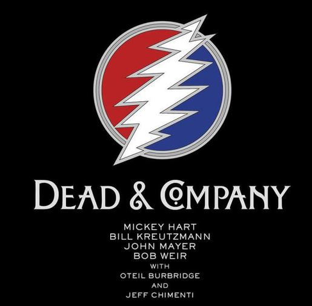

Category - Movies
Star Wars: The Force Awakens 12/17/2015
I entered the movie theater with pretty low expectations, primarily because I know better than to get my hopes up for this type of movie release (similar to Jurassic World). I am pleased to annouce that I left the theater with my expectations exceeded pretty much in all categories. The soundtrack was still expertly done by Jon Williams, and J.J. Abrams did a fantastic job appeasing the audience with references to the original trilogy.
The twist, which I won't spoil for anyone who hasn't seen the movie yet, was not really that unexpected, and there were too many scenes where I could predict what the character was going to say.
Overall I definitely enjoyed the film, and remain excited waiting for the release of Rogue Squadron in two years.
Freddy's Movie Grade: A-

Category - Programming
Today We Learned Express 12/4/2015
Express is going to make setting up webpages much easier than using a v-host. My biggest concern is getting used to the scaffolding, as well as getting used to using Jade/EJS.
So far, backend development has been fun, but it is a huge amount of information to digest from the beginning, and it doesn't seem like there is much of an opportunity to simplify it.
Category - Lifestyle
Brawl For a Cause 11/26/2015
I had such a great time at the Brawl for a Cause event last night at the Grand Hyatt. It was great to see so many people come out to support all of the organizations that were benefitting from all the funds raised.
I am so proud of my buddy, Robert French, for taking it to his opponent and winning the pot of nearly $4000 for the clean water initiative he was fighting for.
It was a night full of flashbacks to high school with tons of people whom I had not seen in years. Definitely a worthy cause, and I would love to attend this event every year if possible.
Till next time!

Category - Programming
Canvas game update 11/20/2015
Really enjoying the creative freedom that I get while working on this game. I was pretty impressed with myself when I first finished the game with jQuery, but since I started rewriting it in Angular, it has become extremely apparent how powerful Angular is as a data-binding tool. Anglar has allowed me to incorporate all 14 SEC football teams, and easily tracks all of the players energy levels.
The next step will be to incorporate the logic that will allow the program to keep track of each player's individual yardage statistics throughout the course of the game.
Hopefully I can wrap up this project pretty soon so that back-end development isn't obstructed by residual front-end projects.
Category - Cars
The fall of the TL Type-S 11/19/2015
It's been a tough year for my car. It started off with the A/C going out, continued with a loss of power to the stereo head unit, and finally culminated in the disintigration of the interior of my front passenger window, causing the pane of glass to fall into the door panel (fortunately, the window was taken care of the next day before the rain could really mess anything up).
This car has been fairly reliable for the duration of my ownership, but these days, it is becoming more of a liability than an asset. Slowly but surely, it feels like every functional bit of that car is beginning to fail, but then again, what do you expect from a 13 year old car? Not much other than occasional mechanical failures, and mild fluid leaks all over.
I think it's about time for an upgrade...

Category - Music
Dead and Co. 11/18/2015
WOW! What can I even say that would do John Mayer and Bob Weir's performances justice? I had never seen the dead before, and it definitely surpassed all of my expectations! I knew coming in what a talent John Mayer is, and I had seen Bob Weir with RatDog, but it was really hard to imagine John and Bob on stage together making magic the way they did. As the show went on, all I kept thinking was, "Man, this show couldn't get much better." And then like clock work, they would take it up another level.
There were a couple short comings of the show: they started a little late, Bob Weir messed up the vocals on one of the songs in the first set, and the encore was short lived.
By far the most two memorable moments from the show happened in the final third of the second set. Drums and Space were absolutely mindblowing, the intensity of the arrangment was palpable, and the lights that went along with it created an environment unlike anything I had ever experienced. Finally, after the band went off stage before the encore after playing a Not Fade Away cover, the entire audience continued to sing, "love is love and not fade away", a capella pretty much until the band came back on stage. It was fascinating to see that sort of 'dead'ication from the crowd, and probably not an experience I will soon forget.